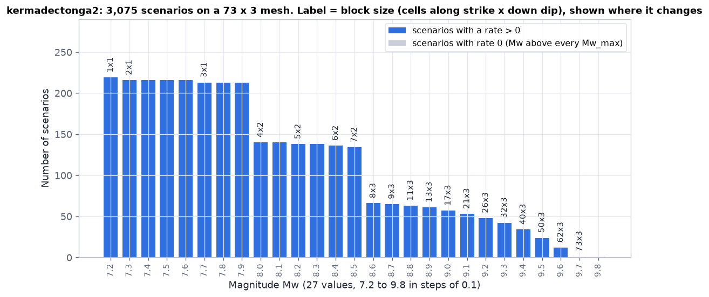
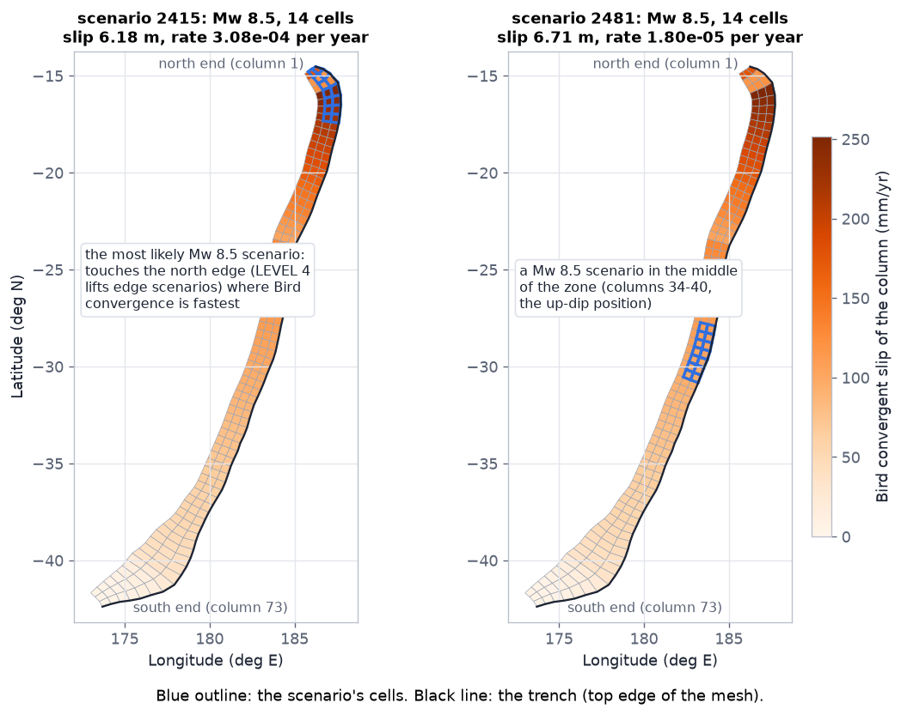
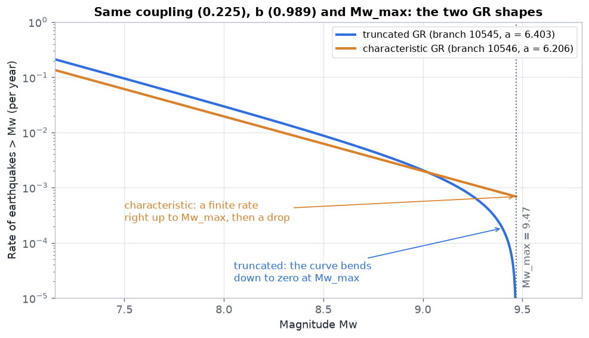
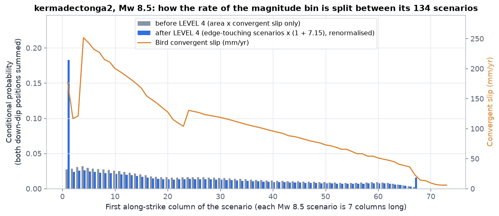
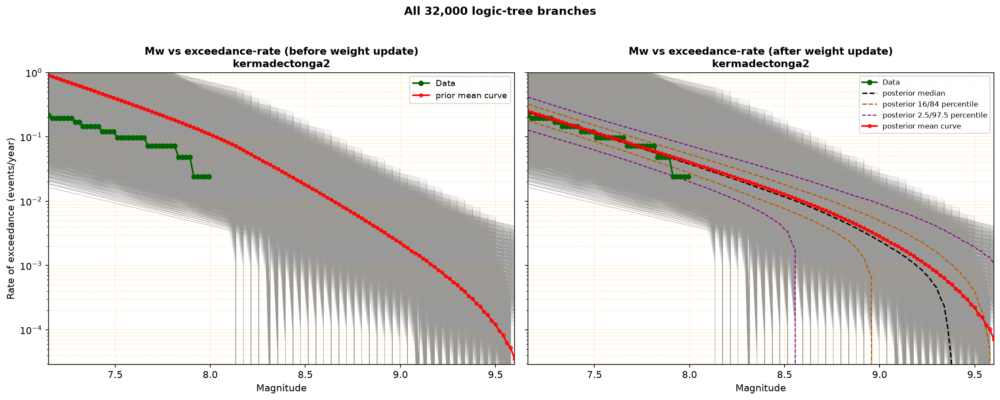
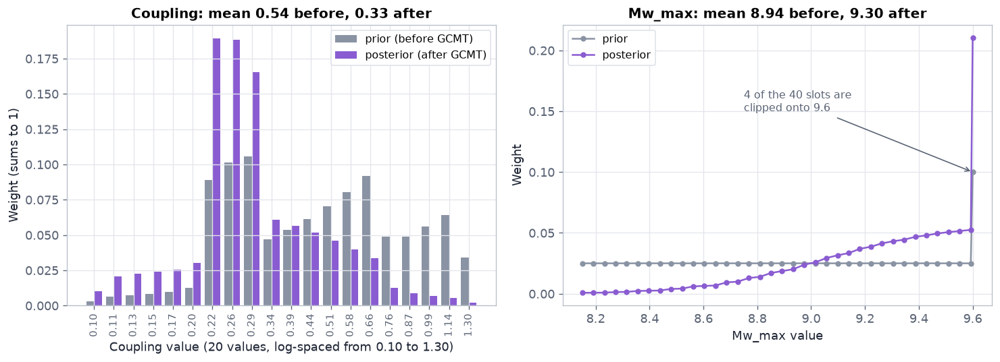
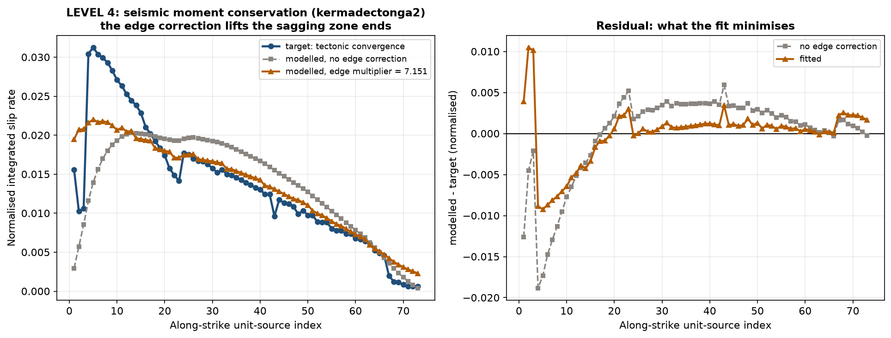
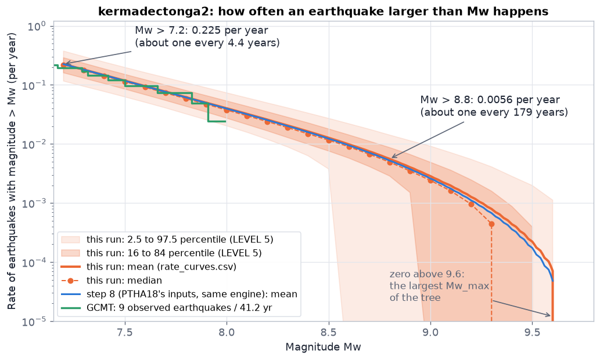

7. Logic tree and rates
Step 6 gathers everything steps 1-5 found into one input file. Step 7 turns it into the answer the whole package exists for: how often each possible earthquake is expected on the zone, per year, with its uncertainty. It does it the way PTHA18 does, in six levels (LEVEL 0 to LEVEL 5). This page explains every level with the real numbers of the main example, kermadectonga2.
At a glance
Read from left to right. The input file (step 6) feeds a list of possible earthquakes and a tree of possible "rules" for the zone. Each rule (a branch) is balanced against the plate motion, weighted by how well it explains the earthquakes actually observed, and finally all branches are summarised as a mean and percentiles.
data/slab2/unit_source_grid.npy (step 2), data/convergence.txt and data/convergence_per_column.json (step 3), data/gcmt/<zone>_gcmt_subset.csv (step 5), inputs/geometry/<zone>_slab2_contours.shp (step 1), Berryman values from lib/berryman_params.pyinputs/input_<zone>_scratch.json (step 6); runs/python/<run_name>/, copied whole to <folder>/outputs/ (step 7): 8 CSV files and 8 figuresThe input file (step 6)
Everything the engine uses is in one file, inputs/input_<zone>_scratch.json, written by step 6. Every key, what it means and where its value comes from: 6. The input file.
The earthquake scenarios
A scenario is one possible earthquake: a rectangle of adjacent unit sources (cells of the mesh), all slipping by the same amount. PTHA18 calls this FAUS (fixed-area uniform slip). The engine builds every scenario that fits on the mesh, for each of the 27 magnitudes. It is a direct port of rptha's rupture_events.R.
- Target size. The scaling relation of Strasser et al. (2010) gives the typical area, length and width of a subduction earthquake of magnitude Mw: log10(area) = -3.476 + 0.952 Mw, log10(width) = -0.882 + 0.351 Mw, log10(length) = -2.477 + 0.585 Mw (km2, km).
- Whole cells. The block must be made of whole cells. The code counts cells as ceil(length / mean cell length) and ceil(width / mean cell width). If the length does not fit on the zone, it takes all columns and fits the width to the area; if the width does not fit, it takes all rows and fits the length. Otherwise it tries four length/width pairs (floor and ceiling of each dimension, the other from the target area) and keeps the one whose aspect ratio is closest to Strasser's, measured in log10.
- Every placement. The block is slid over every position where it fits entirely on the mesh. The positions are listed with the down-dip index varying fastest (rptha's
expand.grid(dipIndex, strikeIndex)). - Slip. The seismic moment of magnitude Mw is M0 = 101.5 Mw + 9.05 N m. The slip is M0 / (μ x area), with the rigidity μ = 3e10 Pa and the real area of the cells in that placement (in m2). The code checks that every scenario's moment equals M0.
--rupture-size local (input JSON events.rupture_size) each placement gets its own block: for each number of rows, the number of columns whose summed real area is closest to Strasser's, then the block with the smallest area + shape error; a placement whose block does not fit is skipped; a rupture longer than the zone takes its full length; every cell is in at least one rupture of each magnitude. The slip is set from the real area, as here. calabria2, Mw 7.2-8.7 within x1.5 of Strasser: 58% → 99.7%. Not PTHA18's procedure. Details.Where in the code: pyptha_v12/events.py get_all_earthquake_events_of_magnitude_Mw(), get_all_earthquake_events() (v10: rupture_size=, _local_blocks()); pyptha_v12/scaling.py Mw_2_rupture_size(), M0_2_Mw(), slip_from_Mw_area_mu(). The engine then rounds every Mw to 3 decimals, as R does, so the "is this bin below Mw_max" test cannot flip on the last bit.
kermadectonga2: the numbers
| Mw | Strasser area (km2) | length x width (km) | block (cells) | scenarios | mean slip (m) |
|---|---|---|---|---|---|
| 7.2 | 2,390 | 54.3 x 44.2 | 1 x 1 | 219 | 0.99 |
| 7.5 | 4,613 | 81.4 x 56.3 | 2 x 1 | 216 | 1.39 |
| 8.0 | 13,804 | 159.6 x 84.3 | 4 x 2 | 140 | 1.94 |
| 8.5 | 41,305 | 313.0 x 126.3 | 7 x 2 | 134 | 6.23 |
| 9.0 | 123,595 | 613.8 x 189.2 | 17 x 3 | 57 | 9.77 |
| 9.5 | 369,828 | 1203.6 x 283.5 | 50 x 3 | 24 | 18.75 |
| 9.6 | 460,469 | 1377.2 x 307.3 | 62 x 3 | 12 | 20.66 |
| 9.8 | 713,839 | 1803.0 x 361.2 | 73 x 3 (whole zone) | 1 | 34.55 |
Source: computed with pyptha_v12/events.py on kermadectonga2_v9/data/slab2/unit_source_grid.npy (script figures_src/make_engine.py, which also checks that the total, 3,075, and every area match outputs/scenario_rates_kermadectonga2.csv). Note Mw 8.0: Strasser's width (84 km) needs 2 rows, so the block is 4 x 2 = 8 cells (about 19,900 km2), larger than the target area; the slip is lower to keep the moment.

--convergence bird every column has some convergence (4 to 6 mm/yr at the southern end), so the only zero-rate scenarios are the two at Mw 9.7 and 9.8, which are above every Mw_max.
convergent_slip_profile). Left: the most likely Mw 8.5 scenario, 2.66e-4 per year, at the fast-converging north end and touching the zone's edge. Right: a scenario in the middle, 1.78e-5 per year, 15 times less likely. The next sections explain where those two numbers come from.LEVEL 0: segmentation
Segmentation asks: does the zone break as one long fault, or as separate pieces (segments) that rupture independently? PTHA18 does not choose. It gives a segmented zone both answers, 50% weight each, and within the segmented half the segments are summed rather than chosen between, because all of them are active (report Section 3.7.6).
v9 reproduces this with generate.py --segmented true. Without the flag the segments block stays empty, the unsegmented zone gets weight 1, and the engine does exactly what v8's does (on v8's own input it gives v8's outputs bit for bit, validate_v9.py v8parity). A segmented run's report and files: what changes on the page, files a segmented run adds.
segmentation.csv for the kermadectonga2 example has four rows: the unsegmented zone at 0.5, and _tonga, _kermadec and _hikurangi at 0.5 each. Dividing 0.5 between the segments would be wrong: the union is a sum, not a choice.Where the segment boundaries come from
The obvious source is PTHA18's own sourcezone_parameters.csv, which lists segment_boundary_alongstrike_index_lower/upper for each of its 13 segmented zones. v9 does not use it under --ptha false, because the point of that flag is that nothing PTHA18 produced feeds the result.
Instead the boundaries come from where PTHA18 took them: Berryman et al. (2015) Table 3.1. Its Appendix A defines, for every segment row, the trench end points Left_E_LONG, Left_N_LAT, Right_E_LONG, Right_N_LAT (kermadectonga2: Hikurangi 42.06°S to 37.48°S, Kermadec to 23.75°S, Tonga to 14.58°S). lib/segmentation.py berryman_segments() places each end point on the mesh's top edge and puts every boundary at the column edge nearest to the end point two neighbours share; the first and last segments are stretched to the mesh's ends, and a segment whose trench lies beyond the mesh gets no column and is left out. On kermadectonga2_v9seg the end points fall 2 to 11 km from this mesh's trench.
Each segment then takes its own Berryman row, as PTHA18's segments do (PTHA18's _tonga 0.1/0.2/0.7 and Mmax-min 8.0 are Berryman's "Tonga"): coupling from the row, Mw_max_observed the larger of the segment's own GCMT maximum and the row's Mmax-min (GCMT alone starts in 1976 and would miss Kamchatka 1952, Mw 9.0, in the Kurils segment). b is the zone's, as on every PTHA18 segment row. A segment too small to host its Mmax-min keeps its own catalogue value, with a warning from step 6.
The alternative, --segment-boundaries bird: the boundaries from Bird (2003)'s plate pairs, each along-strike column assigned to the plate pair of its nearest subduction step and a run of columns sharing a pair made one segment (bird_segments(); each Bird segment takes the Berryman row(s) its plates name, BIRD_SEGMENT_TO_BERRYMAN). Berryman placed most segment ends where the plate pair changes, so the two usually agree; Bird misses a segment whose plate it does not have (kermadectonga2's Hikurangi, PA\HF, the forearc of Wallace et al. 2004). v9 used Bird until 2026-09-30, believing Table 3.1 had no geography.
How this compares with PTHA18
Placed on PTHA18's own published meshes, Berryman's end points give PTHA18's boundaries within 0 to 2 columns wherever the two split the zone at the same place (validate_v9.py berryman_segments): 12 of the 18 shared boundaries land on PTHA18's exact column, 5 one column away, 1 two columns (kermadectonga2's Tonga/Kermadec). The differences in count are PTHA18's own choices on top of Berryman:
| Zone | Berryman | PTHA18 | Boundaries on PTHA18's mesh |
|---|---|---|---|
| kermadectonga2 | 3 | 3 | 22 vs 24, 57 vs 58 |
| kurilsjapan | 2 | 2 | 45 vs 45 |
| izumariana | 2 | 2 | 26 vs 27 |
| ryuku | 2 | 2 | 13 vs 13 |
| newhebrides2 | 4 | 4 | 9, 20, 30 vs 9, 20, 29 |
| solomon2 | 3 | 3 | 19, 28 vs 19, 29 |
| sunda2 | 3 | 4 | 38, 67 vs 39, 67; PTHA18 adds Arakan, which Table 3.1 does not have |
| southamerica | 6 | 5 | 34, 60, 88, 137 identical; PTHA18 merges Patagonia North and South |
| alaskaaleutians | 6 on the mesh | 3 | 29, 67 identical; PTHA18 merges Shumagin to Prince William Sound into "eastern" (Yakataga lies beyond the mesh) |
v9 keeps Berryman's segments as Table 3.1 gives them rather than copying PTHA18's merges, which are not in any public table. On this run's own mesh the boundaries can move by a column or two more, because the mesh itself differs (kermadectonga2: 73 columns against PTHA18's 72). PTHA18's exact segments enter only as the comparison target, below.
The official segmented comparison
On a segmented example, step 8 runs PTHA18's own segmented model through the same engine, so the report compares like with like: PTHA18's unsegmented branch, each of its segments, their union and the 0.5/0.5 mix, beside the same four curves of this run. Each official segment takes its row of sourcezone_parameters.csv (its columns of PTHA18's mesh, its coupling, b range and mw_max_observed) and the GCMT events the saved session gives it. validate_v9.py official_segments checks this against PTHA18's official tree of every segment of 7 zones (kermadectonga2, kurilsjapan, izumariana, ryuku, sunda2, southamerica, alaskaaleutians): every representation matches branch by branch ('a' to 1e-11, posterior weight to 1e-14).
The engine does what PTHA18 does with a segment's scenarios (compute_rates_all_sources.R 492-574, 761-774; report Section 3.7.6): it keeps the whole zone's scenario table and weights each scenario's conditional probability by the part of it inside the segment, so a rupture across a boundary takes rate from every segment it touches. The zone's own scenario rates are then 0.5 x unsegmented + 0.5 x every segment, scenario by scenario, with the percentiles of PTHA18's partial-segmentation step (lines 998-1409, logic_tree.scenario_rate_percentiles_partial_segmentation), written to scenario_rates_<zone>_source_zone.csv. validate_v9.py events_segmented compares these with PTHA18's published rate_annual and its 5 percentiles on the same 7 zones: every scenario, mean within 1e-10 and percentiles within 4e-10. Given v8's own input, v9's engine still reproduces v8's outputs bit for bit (validate_v9.py v8parity).
What each segment gets
A segment is a stretch of the zone with its own parameters: its columns (alongstrike_slice, rptha's is_in_segment), its own area, mean dip and Mw_max range from its own cells, its own convergence, the area-weighted Bird convergence of its cells (compute_rates_all_sources.R 406-412; before 2026-09-30 every segment took the zone's value, which gave kermadectonga2's Tonga segment 99 mm/yr instead of its own 168), its own GCMT catalogue (PTHA18's rule on its own cells, so an event near a boundary can count in both neighbours; the engine refuses to run a segment that would inherit the zone's catalogue), its own coupling (above) and its own full 32,000-branch LEVELs 1 to 3. It inherits the whole zone's LEVEL 4 edge multiplier, because edge events have too little leverage on a segment to fit it stably. LEVEL 5 then draws the percentiles across the unsegmented branch and the segments with a copula.
Where in the code: pyptha_v12/logic_tree.py get_unsegmented_and_segmented_source_names_on_source_zone(); lib/segmentation.py (berryman_segments, and bird_segments for the alternative); run_logic_tree.py main(). Limits: known limits.
LEVEL 1: the 32,000 branches
Four things about the zone are uncertain. Each becomes an axis of the logic tree with a list of possible values and a weight per value (the prior, what we believe before looking at earthquakes). A branch takes one value from each axis; its prior weight is the product of the four weights.
logic_tree_branches_*.csv: coupling varies slowest, GR shape fastest.Seismic coupling is the fraction of the plate motion that is released in earthquakes (the rest creeps silently). It is the most uncertain number of all and cannot be measured from geometry or a catalogue, so it comes from the literature.
- Two cumulative distributions are built: a uniform one on [0.1, 1.3], and a Berryman one that rises linearly from 0 at 0.21, through 0.5 at 0.31, to 1 at 0.72 (the zone's min / preferred / max: Berryman's "Hikurangi-Tonga-Kermadec Whole margin" row, the one PTHA18 used).
- They are averaged 50/50 (PTHA18's
spreadsheet_and_uniform_50_50). - 20 coupling values are laid out with logarithmic spacing over the combined range [0.10, 1.30], so small values are resolved as finely as large ones in relative terms: 0.100, 0.114, 0.131, 0.150, 0.172, 0.196, 0.225, 0.257, ..., 1.136, 1.300.
- The weight of each value is the averaged distribution's increase between the midpoints on either side of it (a numerical derivative), then normalised to sum to 1.
Result: the prior mean coupling is 0.543 (logic_tree_summary.csv, prior_mean_coupling), the same as PTHA18's. The weight bunches near 0.22-0.30, where Berryman's distribution is steep, with a long tail up to 1.3 from the uniform half.
mean_angle). Dividing by cos(dip) once converts the horizontal plate speed into slip along the sloping fault, and only once (why once).Where in the code: pyptha_v12/moment_balance.py coupling_prior_spreadsheet_and_uniform_50_50(), mean_dip_cos_factor(); run_logic_tree.py build_parameter_axes().
The b-value sets how fast earthquakes become rarer with size: with b = 1, each unit of magnitude is 10 times rarer. The anchor [0.7, 0.95, 1.2] is spread into 20 values by linear interpolation along the anchor (R's approx(anchor, n = 20)): 0.700, 0.726, 0.753, ..., 1.174, 1.200, in equal steps of 0.0263. Each gets weight 1/20.
Where in the code: moment_balance.py interpolate_logic_tree_parameter().
Mw_max is the largest magnitude the zone can produce. PTHA18 does not type it: it derives its range from the mesh, and so does this package (Mw_max_anchor: "derive").
- Lower end = mw_max_observed + 0.05 = 8.0 + 0.05 = 8.05, but never below 7.35.
- Upper end = the smaller of two limits from the Strasser relation: the magnitude whose area at -1 standard deviation equals the zone's area (542,559 km2 gives 9.994), and the magnitude whose width at -2 standard deviations equals the zone's mean column width (157.4 km gives 9.758). The width limit wins: a narrow zone cannot host a very wide rupture.
- 40 values are spread evenly between 8.05 and 9.758 (step 0.0438), each with weight 1/40.
- Only then are they capped at 9.6 (9.0 for a normal-fault zone). On kermadectonga2 the last 4 values (9.626 to 9.758) become 9.6, so 37 distinct values remain and 9.6 carries 4/40 = 0.1 of the weight. Capping before interpolating would give a different axis; PTHA18 caps after (
compute_rates_all_sources.Rlines 358-363; the reason is explained in the docstring ofmw_max_anchor()).
Where in the code: moment_balance.py mw_max_anchor(); cap in run_logic_tree.py build_parameter_axes().
A Gutenberg-Richter (GR) curve gives the rate of earthquakes larger than Mw as 10a - b Mw. PTHA18 uses two ways of stopping it at Mw_max:
characteristic: N(>Mw) = 10a - b Mw (Mw <= Mw_max), 0 aboveFor Mw below Mw_min (7.15) the formulas use Mw_min. Truncated: the curve bends smoothly to zero at Mw_max. Characteristic: the rate stays finite up to Mw_max and drops there, which puts extra earthquakes exactly at Mw_max. Weights: 0.7 truncated, 0.3 characteristic.

Where in the code: pyptha_v12/rates.py Mw_exceedance_rate_truncated_gutenberg_richter(), Mw_exceedance_rate_characteristic_gutenberg_richter().
coupling: 20 values in [0.100, 1.300], prior mean = 0.543
LEVEL 1: 32,000 branches (20 coupling x 20 b x 40 Mw_max x 2 GR type)
Mw_max anchor derived from geometry: [8.0500, 9.7578]
From kermadectonga2_v9/run_final.log.
Conditional probability
A GR curve says how many Mw 8.5 earthquakes happen per year, not where. The conditional probability of a scenario is its share of its magnitude bin: the shares of the 134 Mw 8.5 scenarios add up to 1. The rate of one scenario is then (PTHA18 report, Equation 3):
rate_p* columns). Summing rj over all scenarios above a magnitude gives back the exceedance curve.The engine has three models; which one is used depends on step 3.
all_equal
Every scenario of a magnitude has the same share. Not used by PTHA18, nor by default here; kept for tests.
inverse_slip
Share proportional to 1 / slip. PTHA18's model for zones with a constant convergence (only puysegur). Used here when you set CONVERGENCE_OVERRIDE_MM_PER_YR in step 3.
convergent_slip_weighted
Share proportional to area x mean convergent slip of the scenario's cells. PTHA18's model for every zone that uses Bird, and the default here.
convergent_slip_profile, Bird's slip speed of the cell's column, sqrt(convergent2 + sideways2). So within one magnitude, scenarios on fast-converging parts of the zone are more likely. The kermadectonga2 profile runs from 251 mm/yr near the north end down to about 6 mm/yr in the last three southern columns (71-73), near New Zealand, so scenarios lying only there get a small share.
It does not change how many earthquakes of each magnitude happen, only where, which is what a tsunami study needs. Checked on PTHA18's own inputs, zone by zone: with this model the per-scenario rates match PTHA18's published rates within 1e-10, and their percentiles within 1e-8 (Validation); with the 1/slip model on the same Bird zones they would be off by a median 3.8% (philippine) to 26% (makran2), worst case 121%.
--rupture-size local one rupture starts at each cell, so where cells are small more ruptures overlap the same km² and, with the weights above, would collect more rate for no tectonic reason. The engine then multiplies the weight of whichever model is used by q = the mean over the rupture's cells of 1 / (number of ruptures of the same magnitude containing that cell). The rate of each magnitude is unchanged (only its sharing among scenarios); q is also larger at the two ends, so it does part of LEVEL 4's job and the fitted edge multiplier drops (calabria2 3.69 → 1.04). Not used with rptha's rule. Details.Where in the code: run_logic_tree.py build_source_representation() (the convergent_slip_weighted branch; v10_q: q from events.coverage_weights() after all three models); pyptha_v12/rates.py get_event_probabilities_conditional_on_Mw(), individual_scenario_rates(). R original: make_conditional_probability_function_uniform_slip.
LEVEL 2: moment balance
This is where the rates are born. The idea of the moment balance: over thousands of years, the earthquakes on the zone must release the slip that the coupled part of the plate motion accumulates. A GR curve has a shape (b, Mw_max, truncated or characteristic) and a height (the a-value). For each branch, the engine chooses the height so that the long-term slip released by all the scenarios equals the long-term slip supplied by the plates.
logic_tree_branches_kermadectonga2.csv (a = 6.402531).The moment below Mw 7.15
Earthquakes smaller than Mw 7.15 also release some of the plate's slip, but they are not in the scenario list. With account_for_moment_below_mwmin: true the engine extends the branch's GR curve (a = 0, same b and Mw_max) down to Mw 0 on a 0.001 grid, adds up the moment of each tiny bin, and keeps only the fraction carried by magnitudes 7.15 to 9.85. For branch 10545 (b = 0.99) this fraction is 0.935: 6.5% of the plate's seismic slip goes to small earthquakes, and the scenarios get the remaining 93.5%. A higher b-value (more small quakes) lowers the fraction.
Worked example, kermadectonga2 branch 10545
- Slip rate: 99.3560 mm/yr / 1000 x 0.2248 x 1.0373 = 0.023168 m/yr.
- Left side: 542,559 km2 x 1e6 x 0.023168 x 0.9346 = 1.1747e10 m3/yr.
- Right side with a = 0, summed over the 3,075 scenarios with the edge-corrected conditional probabilities: 4,649 m3/yr.
- a = log10(1.1747e10 / 4,649) = 6.4025.
- The branch then predicts N(>7.15) = 106.4025 - 0.9895 x 7.15 - 106.4025 - 0.9895 x 9.4692 = 0.212 per year.
Across all 32,000 branches, a runs from 3.220 to 9.242 (logic_tree_summary.csv, level 2). The engine only loops over the 1,600 distinct (b, Mw_max, GR shape) combinations: coupling only shifts a by log10 of the slip rate, so it is added at the end. Each branch's curve is tabulated from Mw 7.15 to 9.6 every 0.02 (PTHA18's computational_increment).
Where in the code: pyptha_v12/rates.py rate_of_earthquakes_greater_than_Mw_function() and compute_moment_fraction_from_events_greater_or_equal_than_mwmin(). Validated: on PTHA18's own inputs, all 32,000 a-values match PTHA18's branch tables within 3e-12 on 4 zones (Validation).

fig_branch_fan_kermadectonga2.png. Left: the prior mean (red), before LEVEL 3. Right: after LEVEL 3, the posterior mean (red), median and percentile bands. Green: the 9 GCMT earthquakes as an observed rate. Look at the left end: the prior mean is far above the green data (0.93 earthquakes of Mw > 7.15 per year against 0.22 observed), the posterior mean sits on it (0.245). The fan is wide because coupling alone spans a factor 13 (0.1 to 1.3).LEVEL 3: Bayesian update with GCMT
The prior weights come from the literature. LEVEL 3 checks each branch against the earthquakes that actually happened: 9 GCMT earthquakes of Mw >= 7.15 on this zone in 41.16 years (1976-01-01 to 2017-03-01; see steps 4-5). This is a Bayesian update:
The likelihood, exactly as coded
- Count. For each branch, its rate of earthquakes above the threshold, N(>7.15), comes from its GR curve. The probability of seeing exactly 9 in 41.16 years is the Poisson probability P(9; N(>7.15) x 41.16). Example: branch 10545 predicts 0.216 per year, so P = 0.132; a branch predicting 0.8 per year gets P = 6e-7.
- Magnitudes. Because step 6 also passes the 9 magnitudes, the likelihood is multiplied by the probability density of each observed magnitude under the branch's GR curve above 7.15 (computed by a centred difference of the curve with a step of 1e-4). This rewards branches whose b-value and Mw_max fit the observed mix of sizes. PTHA18 passes the magnitudes too.
- Prior x likelihood, normalised to sum to 1, gives the
posterior_probof every branch.
Where in the code: pyptha_v12/rates.py compute_updated_logic_tree_weights() (a full port of rptha's, which also supports inter-event times; PTHA18 and this package use the Poisson count). The threshold must not be below Mw_min: the engine refuses it, because the half-bin shift already lives in Mw_min = 7.15.

logic_tree_branches_kermadectonga2.csv). Coupling: the weight moves to 0.22-0.30; the mean drops from 0.54 to 0.33. Mw_max: larger values gain weight (mean 8.94 to 9.30). For the same moment budget, a larger Mw_max spends more of it on rare giant earthquakes and leaves fewer Mw 7-8 ones, which fits the low observed count. The b-value hardly moves (mean 0.950 to 0.917), and truncated GR goes from 0.70 to 0.63.TVD: how much did the weights move?
The engine summarises the update with one number, the total-variation distance:
kermadectonga2: TVD = 0.690, so about two thirds of the weight moved. Branches predicting more than 0.5 Mw 7.15+ earthquakes per year held about 60% of the prior weight and hold 0.3% after. With PTHA18's inputs (step 8) the TVD is 0.679.
LEVEL 3 data: 9 events above Mw 7.15 in 41.1636 yr (whole zone), magnitudes supplied
LEVEL 3: posterior applied, TVD = 0.6898, mean coupling 0.543 -> 0.326
From kermadectonga2_v9/run_final.log. The branch-weight figure fig_branch_weights_kermadectonga2.png (in outputs/figures/) shows the same marginals for b, coupling and Mw_max, with the TVD in its title.
LEVEL 4: edge correction
A problem of uniform-slip rectangles: a cell in the middle of the zone is covered by many placements of each block, a cell in the first or last column by few. So, if every placement had its fair share, the ends of the zone would slip less over the long term than the plates push them. LEVEL 4 fixes this edge effect by making scenarios that touch the first or last column more likely.
convergence_profile, the convergent part of Bird's speed per column (flat if the convergence is constant).- First pass. The engine builds the rate model (LEVELs 1-3) with the uncorrected conditional probabilities and computes every scenario's rate rj.
- Integrated slip. For a trial multiplier m, each cell's long-term slip is Σ slipj x rj over the scenarios covering it, with edge-touching scenarios' rates multiplied by (1 + m) and each magnitude bin renormalised.
- Misfit. Both the modelled slip and the target are divided by their totals (coupling sets the size, only the shape is compared), and the misfit is Σcells (model share - target share)2. The target is per column, repeated down dip, not weighted by cell area, as in R.
- Search. m is found in [0, 30] by Brent's method (scipy
minimize_scalar, bounded), stopping at R's tolerance, machine epsilon0.25 = 1.2e-4 (with scipy's default tolerance, 1e-5, the multiplier would differ slightly from R's and the per-scenario rates would match PTHA18's only to 1e-6; with R's tolerance they match within 1e-10). If the misfit at m = 0 and m = 10 is the same, the engine stops with an error (no scenario touches an edge with any weight). - Second pass. The corrected conditional probabilities go back into LEVEL 2: they change the right side of the moment balance, so every a-value is recomputed, and LEVEL 3 with it.
LEVEL 4 edge correction: FITTED multiplier = 7.1507, misfit 0.0007026 -> 0.000317 (54.9% better)
96 of the 3,075 kermadectonga2 scenarios touch an edge. Step 8's run with PTHA18's own mesh and inputs fits 6.6953 (misfit 54.0% better). If the fit ends within 0.001 of a bound, the log prints a warning.

fig_moment_balance_kermadectonga2.png). Left: blue, the target (Bird convergence shape); grey, the modelled long-term slip without correction; orange, with m = 7.15. Look at columns 1-3 and 70-73: the grey curve drops, the orange one follows the target better. Right: the residual that is minimised. The shape is not matched everywhere: uniform rectangles cannot follow every bump of the Bird profile, only the edges are corrected.Where in the code: pyptha_v12/moment_balance.py fit_edge_multiplier(), back_calculate_convergence(); two-pass logic in run_logic_tree.py build_source_representation(). R original: compute_rates_all_sources.R (optimize(fun_to_optimize, lower = 0, upper = 30)) and back_calculate_convergence.R.
LEVEL 5: percentiles
After LEVEL 3 each of the 32,000 branches has a curve and a weight. The mean curve is the weighted average. But a hazard study also wants the spread: "with 84% confidence the rate is below X". That is a percentile of the branch rates, weighted by the branches' posterior weights. The engine computes percentiles in two ways, for two different files.
1. Monte Carlo, for exceedance_rate_percentiles.csv
This is PTHA18's LEVEL 5 routine (compute_exceedance_rate_percentiles_with_random_sampling), applied here to magnitude thresholds instead of tsunami heights.
- Each branch's exceedance rate is read at every 0.1 of Mw from 7.2 to 9.8, 27 thresholds (zero above its own Mw_max).
- At each threshold, the weighted distribution of the 32,000 rates is summarised by its inverse at 1,000 probabilities (spaced as 0.5 (1 + sin(t)), denser near 0 and 1).
- N = 40,000 uniform random numbers (seed 123) are drawn and turned into 40,000 sampled rates through that inverse distribution.
- With segments, each segment would get its own sample and their rates would be added; the copula says whether segments share the same random number (
comonotonic: when one segment is at its 90th percentile, so are all) or not (independent). Without segments all 40,000 samples go to the whole zone and the copula has no effect. - The mean of the samples, and their 2.5, 16, 50, 84 and 97.5 percentiles (R's
quantile(type = 6)), are written.
| Mw threshold | mean | p2.5 | p16 | median | p84 | p97.5 | step 8 mean |
|---|---|---|---|---|---|---|---|
| 7.2 | 0.2248 | 0.1160 | 0.1602 | 0.2183 | 0.2882 | 0.3739 | 0.2243 |
| 7.6 | 0.0953 | 0.0507 | 0.0682 | 0.0916 | 0.1225 | 0.1617 | 0.0947 |
| 8.0 | 0.0402 | 0.0202 | 0.0273 | 0.0376 | 0.0534 | 0.0735 | 0.0397 |
| 8.4 | 0.0162 | 0.0063 | 0.0099 | 0.0148 | 0.0227 | 0.0333 | 0.0158 |
| 8.8 | 0.00557 | 0 | 0.00286 | 0.00492 | 0.00869 | 0.01417 | 0.00520 |
| 9.2 | 0.00126 | 0 | 0 | 0.00095 | 0.00246 | 0.00549 | 0.00110 |
Source: kermadectonga2_v9/outputs/exceedance_rate_percentiles.csv and outputs_official/exceedance_rate_percentiles.csv (step 8: PTHA18's mesh, convergence and GCMT list, run unsegmented through the same engine). A percentile of 0 means that more than that share of the weight is on branches whose Mw_max is below the threshold. The Monte Carlo mean (0.2248 at Mw 7.2) differs slightly from the exact mean curve (0.2251 in rate_curves.csv) because it is estimated from 40,000 samples. On a segmented run this file holds the whole zone's percentiles: the unsegmented branch and the segments are sampled together (PTHA18's method), so its mean is the LEVEL 0 mix, not the unsegmented curve.
2. Exact, for the rate_p* columns of scenario_rates_*.csv
For each scenario the engine reads the weighted percentile of the 32,000 branch curves directly, at every point of the 0.02 grid (sort the branch rates, accumulate their weights, take the first rate where the sum reaches p), and applies the Equation 3 split to that percentile curve. No random numbers. Caveat from the PTHA18 report (Section 3.7.7): these are increments of percentile curves, not percentiles of increments, so one scenario's 16th percentile rate can exceed its median; summed over scenarios the order is restored.
Where in the code: pyptha_v12/logic_tree.py branch_exceedance_rates_on_thresholds(), compute_exceedance_rate_percentiles_with_random_sampling(), weighted_percentile(), _r_quantile_type6(); pyptha_v12/rates.py MwRateFunction._quantile_curve(), individual_scenario_rates(). Validated: every scenario's 5 percentiles match PTHA18's published ones within 8e-9 on 4 unsegmented zones, and within 4e-10 on 7 segmented zones (events_segmented).

rate_curves.csv, every 0.01 from 7.2 to 9.8). Shaded: the 68% and 95% ranges from LEVEL 5 at the six thresholds (straight lines between them), dashed: the median. Blue: step 8, PTHA18's inputs through the same engine (0.2% lower at Mw 7.2, 7% lower at Mw 8.8). The coupling anchors (0.21 / 0.31 / 0.72) and mw_max_observed (8.1) are now PTHA18's own, both taken from Berryman as PTHA18 did, so the gap is the mesh: this run's is 6% larger (542,559 vs 511,220 km2), its mean dip is 15.4 vs 16.0 deg, and its edge multiplier 7.15 vs 6.70. Green: the observed GCMT rate, which LEVEL 3 made the curve follow. The curve is exactly 0 above Mw 9.6, the largest Mw_max. Note: PTHA18's published curve for kermadectonga2 is segmented (LEVEL 0), so it is not this blue line.Outputs
The engine writes to runs/python/<run_name>/ (fixed in the engine), and step 7 then deletes and replaces <folder>/outputs/ with a copy of it. Files marked <name> are written once per source representation; in unsegmented runs <name> is the zone (kermadectonga2), in segmented runs also every segment (kermadectonga2_tonga, kermadectonga2_kermadec, kermadectonga2_hikurangi), all on the zone's scenario table. All numbers are written with 17 significant digits.
| File | Rows (kermadectonga2) | Columns and meaning |
|---|---|---|
scenario_rates_<name>.csv | 3,075 | The end product. event_id (1-based, rptha order), Mw, area_km2, slip_m, mean_depth_km (mean of the cells' centre depths), is_edge_touching (1 if it covers column 1 or the last), conditional_probability (after LEVEL 4), rate_mean (per year, from the mean curve), rate_p0.025 ... rate_p0.975 (from the exact percentile curves). Sum of rate_mean = 0.2506 = rate of Mw > 7.15. |
rate_curves.csv | 261 | Mw (7.20 to 9.80 by 0.01), exceedance_rate_unsegmented (posterior mean, per year). With segments, also one column per segment, exceedance_rate_union_of_segments and exceedance_rate_source_zone (the LEVEL 0 mix). |
exceedance_rate_percentiles.csv | 6 | threshold_Mw, mean_exrate, p0.025, p0.16, p0.5, p0.84, p0.975 (LEVEL 5 Monte Carlo). Segmented: the whole zone's. |
logic_tree_branches_<name>.csv | 32,000 | branch_id, coupling, slip_rate (m/yr), b, Mw_min, Mw_max (after the 9.6 cap), Mw_frequency_distribution, a, prior_prob, posterior_prob, posterior_prob_with_Mw_error (equals posterior_prob unless a magnitude-error model is set). About 7 MB. |
conditional_prob_<name>.csv | 3,075 | Mw, ecp_raw (before LEVEL 4), ecp_edge_corrected (after), is_edge_touching. Same row order as the scenarios. |
integrated_slip_<name>.csv | 219 | One row per cell: unit_source, alongstrike_number, downdip_number, lon_c, lat_c, depth_km, area_km2, target_convergence_shape (the LEVEL 4 target, normalised to sum 1), integrated_slip_no_edge_correction and integrated_slip (long-term slip rate in m/yr from the first-pass mean scenario rates, without and with the fitted multiplier). |
logic_tree_summary.csv | 17 | level,item,value: level 0 weights and segment count; level 1 branch count, mean dip, 1/cos(dip), convergence, prior mean coupling; level 2 a_min, a_max; level 3 prior-posterior TVD; level 4 edge multiplier and total integrated slip; R total scenario rate; level 5 copula and N. |
segmentation.csv | 1 | source_representation,role,weight: kermadectonga2,unsegmented,1. Segmented: one more row per segment, each at the union's full weight (0.5), and the unsegmented row at 0.5. |
scenario_rates_<zone>_source_zone.csv | segmented only | Every scenario's rate for the zone as a whole: event_id, Mw, area_km2, slip_m, mean_depth_km, rate_mean (0.5 x unsegmented + 0.5 x each segment), rate_p0.025 ... rate_p0.975 (PTHA18's partial-segmentation percentiles). What PTHA18 publishes as rate_annual* for a segmented zone. |
branch_rate_curves_<name>.csv | not written | Every branch's curve on the 0.02 grid. Only when outputs.write_branch_rate_curves is true (step 6 sets false). |
kermadectonga2's logic_tree_summary.csv
level,item,value 0,unsegmented_weight,1 0,n_segments,0 1,n_branches_kermadectonga2,32000 1,mean_dip_deg_kermadectonga2,15.418044719251787 1,dip_factor_kermadectonga2,1.0373317843838645 1,convergence_mm_per_yr_kermadectonga2,99.356014615600003 1,prior_mean_coupling_kermadectonga2,0.54332240267403342 2,a_min_kermadectonga2,3.2199185152383256 2,a_max_kermadectonga2,9.2416788114644088 3,prior_posterior_tvd_kermadectonga2,0.68979093565161853 4,edge_multiplier_kermadectonga2,7.1507274326377139 4,total_integrated_slip_kermadectonga2,7.3541896104967206 R,total_scenario_rate_kermadectonga2,0.25056579652806499 5,copula,comonotonic 5,N_samples,40000
Three rows (union and per-segment weights, both 0) are left out above. A segmented run (kermadectonga2_v9seg) has the 11 items from n_branches to total_scenario_rate again for every segment, named ..._kermadectonga2_tonga, ..._kermadec and ..._hikurangi, and the level 0 rows give the weights: unsegmented 0.5, union 0.5, 3 segments.
Figures (outputs/figures/)
| File | Shows |
|---|---|
fig_geometry_<name>.png | The mesh in map view, cell centres coloured by depth (skipped for step 8's official_statistics mode, which has no corners; step 8 therefore writes 7 figures). |
fig_branch_fan_<name>.png | All branch curves, prior mean (left) and posterior mean, median and percentiles (right), with the GCMT rate (shown above). |
fig_branch_weights_<name>.png | Prior vs posterior weight over b, coupling and Mw_max, TVD in the title. |
fig_scenario_rates_<name>.png | Every scenario rate vs Mw (edge-touching ones in orange), and the per-bin and summed rates. |
fig_moment_balance_<name>.png | The LEVEL 4 fit (shown above). |
fig_segmentation.png | The source representations on a map and their LEVEL 0 weights. |
fig_representation_curves.png | Mean curve per representation (one curve here). |
fig_percentiles.png | The LEVEL 5 bands and their relative width. |
Next: step 7b adds realistic slip patterns to these scenarios without changing any rate; step 8 and step 9 run PTHA18's inputs through the same engine and write the report.